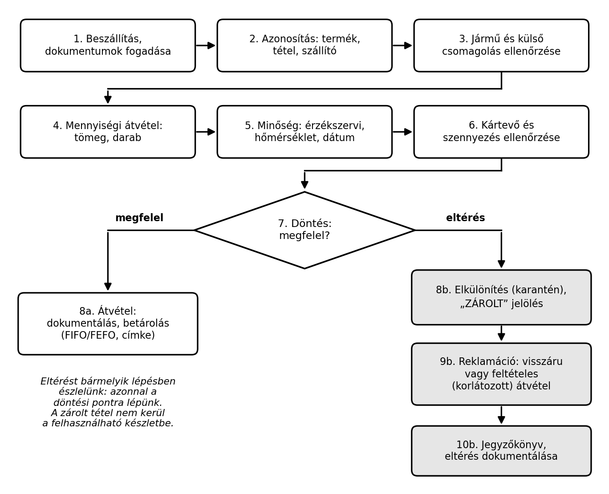

Hajnalban érkezik a liszt- és élesztőszállítmány. A pékségben minden a nyersanyagokkal kezdődik: ha rossz minőségű, sérült vagy lejárt lisztet veszünk át, abból rossz tészta és rossz kenyér lesz, még akkor is, ha a dagasztás, kelesztés és sütés tökéletes. Ha pedig a később észlelt hibát nem dokumentáljuk az átvételkor, a vitát elveszíthetjük a beszállítóval szemben. Az átvétel ezért nem „papírmunka”, hanem az első termékbiztonsági és minőségi kapu: itt dől el, hogy a nyersanyag fizikailag, kémiailag és mikrobiológiailag alkalmas-e a gyártásra.
A feladatod pék tanulóként: egyszerre ellenőrizni a mennyiséget (megvan-e, amit rendeltünk), a minőséget (megfelelő-e a felhasználásra), az élelmiszer-biztonságot (nem sérült, nem szennyezett, hőmérséklete megfelelő), és ha eltérés van, azt szabályosan reklamálni. Ezt az alfejezetet később használjuk a Liszt- és nyersanyagtárolás, raktározás tanulásakor, mert csak az mehet be a raktárba, amit szabályosan átvettünk.
Képzeld el az átvételi rámpát: teherautó áll be, raklapokon zsákolt liszt, hűtőládában friss élesztő, kartonokban tojáspor, vödrökben töltelék. A pék a szállítólevél mellett ellenőrzi a raklapok számát, a zsákok jelölését, a hűtött áru belső hőmérsékletét, és közben megnézi, nincs-e lisztfolt, szakadt zsák, rágásnyom, dohos szag. Az átvétel során három párhuzamos „látószögből” dolgozik: dokumentum szerint mi jön, fizikailag mi érkezett, és biztonsággal felhasználható-e.

Az ábrán a folyamat a döntési pontnál kétfelé ágazik: a megfelelő tétel dokumentálás után a raktárba kerül; ha az ellenőrzés bármely lépésében minőségi vagy biztonsági eltérés van, az érintett tételt elkülönítjük (karantén, „zárolt” jelölés), és csak ezután indul a reklamáció, a visszáruzás vagy a feltételes átvétel – a hibás tétel nem kerül a felhasználható készletbe.
Definíció. A nyersanyag-átvétel az a műveletsor, amelynek során a beérkező anyagot dokumentáljuk, azonosítjuk, mennyiségi és minőségi szempontból ellenőrizzük, és döntést hozunk arról, hogy a raktárba vagy a termelésbe bekerülhet-e.
Definíció. A mennyiségi átvétel a beérkezett anyag tömegének, darabszámának, térfogatának vagy egyéb mennyiségi jellemzőjének összevetése a szállítólevélen/számlán és a rendelésen feltüntetett adatokkal.
Definíció. A minőségi átvétel a beérkezett anyag érzékszervi (szín, szag, állag, íz, látvány), fizikai (hőmérséklet, tömeg, csomagolás), kémiai (pl. savfok, hamutartalom – ha előírt) és mikrobiológiai (pl. gyanús jelek) ellenőrzése a felhasználásra való alkalmasság megítélésére. A teljes laborvizsgálat nem az átvételkor történik, de a gyors ellenőrzés itt is döntő.
Szabály. Az átvételhez mindig meg kell lennie az árukísérő dokumentumoknak. Az élelmiszer-biztonság szempontjából a nyomonkövethetőséget a 178/2002/EK rendelet általános elvei és a 852/2004/EK higiéniai rendelet követelményei alapozzák meg (ellenőrizendő: rendelet hatályos szövege és a pékség HACCP-terve).
Továbbvitt eredmény. Az itt megtanult átvételi szemlélet, a „dokumentum → fizikai állapot → biztonság” hármas, valamint az elkülönítés és a dokumentálás közvetlenül szolgálja a raktározási alfejezetet (Liszt- és nyersanyagtárolás, raktározás), mert oda csak ellenőrzött, megfelelő nyersanyag kerülhet.
Az átvétel első lépése a dokumentumok ellenőrzése. Az Európai Unió élelmiszerjoga és a magyar élelmiszerlánc-felügyeleti előírások megkövetelik, hogy az élelmiszer-vállalkozó meg tudja határozni, kitől kapott alapanyagot és kinek adott terméket (nyomonkövethetőség). Ezért szállítmányhoz kísérő dokumentumok tartoznak.
Előírás. Az árukísérő okmányoknak legalább az alábbi adatokat kell tartalmazniuk ahhoz, hogy a tétel azonosítható és nyomon követhető legyen (ellenőrizendő: a 178/2002/EK rendelet 18. cikke és a magyar élelmiszerlánc-felügyeleti jogszabályok hatályos szövege):
Figyelem. A szerződéses vagy elektronikus (EDI) úton érkező dokumentumoknál is ugyanazt az adatkört kell ellenőrizni; a papíralapú szállítólevél hiánya nem mentesít a tétel azonosíthatósága alól.
A mennyiségi átvétel három szintű lehet: bruttó tömeg (csomagolással együtt), nettó tömeg (magának az anyagnak a tömege) és darabszám (zsákok, kartonok, kannák, vödrök). A gyakorlatban a lisztet zsákokban vagy silósan szállítják, az élesztőt és hűtött árut kartonban, a folyékony anyagokat (pl. növényi olaj, sós víz koncentrátum) pedig kannában vagy tartályban.
Példa. Egy szállítólevél szerint 40 db 25 kg-os lisztes zsák, azaz 1000 kg BL 55 liszt érkezik. Az átvevő megszámolja a zsákokat: 40 db van. Egy mintát (például 3–5 zsákot) lemér, és az átlagos tömeg 25,1 kg. Az ellenőrzés jó, mert a 40 db × 25 kg = 1000 kg rendre fennáll, és a minta tömegingadozása a gyakorlatban elfogadható tűrésen belül van (ellenőrizendő: a gyártói/töltési tűrés és a beszerzési szerződés).
Figyelem. Ne akard az összes zsákot darabonként mérni, ha a szállítmány nagy; a rendszeres átvételhez egyszerű mintavételes ellenőrzés is használható, de a hűtött anyagnál a szállítmány több pontján (több kartonnál, raklaponként) kell mérni, mert ott a hőmérséklet láncban kismértékű hiba is nagy következményű. A mintavételi gyakoriságot a pékség HACCP-terve határozza meg (ellenőrizendő: üzemi HACCP-terv).
A minőségi átvétel során a nyersanyag érzékszervi tulajdonságait és a csomagolását ellenőrizzük. Minden anyagnál megvizsgáljuk:
Szabály. Minőségi vagy élelmiszer-biztonsági eltérésnél (sérülés, szag, hőmérséklet, kártevő, lejárt dátum) az érintett tételt el kell különíteni (karanténba tenni), meg kell jelölni „visszáru” vagy „várakozó” címkével, és azonnal értesíteni a felelős vezetőt. Tisztán mennyiségi eltérésnél (hiány) az ép, azonosítható tételt átvesszük, a hiányt a szállítólevélen rögzítjük és reklamáljuk. Az élelmiszer-biztonsági veszély esetén a tétel nem használható fel.
Ez az átvételi „recept” a szabályos nyersanyag-átvétel ellenőrzőlistája. Lépésről lépésre követve az első kapu a termékbiztonságban.
Higiénia. Az átvételi területen tartsd rendben a mérleget és az eszközöket; a mintavételnél használj tiszta, élelmiszerre alkalmas kanalat, és soha ne nyúlj puszta kézzel a termékbe. Mintavétel után a zsákot/kartont zárd vissza, vagy a mintát helyezd lezárt edénybe, és jelöld fel.
HACCP. Az alapanyag-átvétel a HACCP-rendszerben gyakori ellenőrző pont. Hőkezelés nélkül felhasznált, romlandó áruknál (pl. túró, tejszín, kész töltelék) a hőmérséklet-ellenőrzés lehet CCP, kritikus határ pl. ≤ 5 °C (tanulási példa; ellenőrizendő: HACCP-terv). A friss élesztő 0–8 °C-os szállítási hőmérséklete minőségi ellenőrző pont (CP): túllépésnél az erjesztőképesség romlik, a tételt reklamáljuk (a kelt tészta sütése hőkezel, ezért itt nem élelmiszer-biztonsági CCP-ről van szó). Veszélyek: mikrobiológiai (romlás, kórokozó), kémiai (szennyező anyag, nem engedélyezett adalék), fizikai (idegen anyag, sérült csomagolás). Megelőzés: szállítóértékelés, írásos előírások, hőmérséklet-ellenőrzés, szemrevételezés. Minőségi határérték például a hűtött élesztőnél ≤ 8 °C (ellenőrizendő: a termék gyártói adatlapja). Monitoring: minden szállítmánynál vagy tételenként, a kijelölt felelős által. Eltérés esetén: tétel visszatartása, áru át nem vétele, reklamáció, ok kivizsgálása.
Adott: A pékség 20 db 25 kg-os (nettó) BL 80 lisztet rendelt. A szállítólevél mutatja: 20 db, 500 kg. A jármű tiszta. A zsákok épek. A mintavétellel kiválasztott 4 zsák tömege: 25,0 kg; 25,2 kg; 24,8 kg; 25,1 kg. A liszt szaga friss, színe a BL 80-ra jellemző. A tételszám egyezik. A minőségmegőrzési idő 12 hónap, a lejárat távoli.
Keresett: Dönts: átvehető-e a szállítmány?
Számítás: Az összes tömeg: . A szállítólevél szerinti tömeg is 500 kg. A minta átlagos tömege: . A minta átlaga jól közelíti a névleges 25 kg-ot. A zsákszám egyezik. A minőségi vizsgálat rendben.
Eredmény: A tétel átvehető, a raktárba betárolható. Az átvételi lapra feljegyezzük a minta tömegét és az ellenőrzés eredményét. ∎
Adott: A pékség 10 karton friss élesztőt rendelt, kartondobozonként 20 db 500 g-os tömb, hűtőláncban szállítva. A szállítólevél szerint: 10 karton, 100 kg friss élesztő, hőmérséklet 4 °C. A jármű hűtőterében a belső hőmérő 9 °C-ot mutat. A kartonokon a belső hőmérséklet mérésénél (szúrópróbaszerűen 3 karton közepén) 9 °C, 10 °C és 11 °C értékeket mérsz. Az élesztő felülete nyálkás, enyhén savanyú szagú. A lejárati idő még rendben.
Keresett: Mi a döntés, és hogyan írjunk reklamációt?
Megoldás: A mért hőmérsékletek meghaladják a friss élesztőre előírt 0–8 °C-ot (ellenőrizendő: gyártói adatlap). A nyálkás felület és a savanyú szag romlásra utal. A tételt nem vehetjük át. A 10 kartont azonnal elkülönítjük, címkével jelöljük: „Visszáru – hűtési hiba, romlásra gyanús”. A szállítólevélre ráírjuk: „Az átvétel megtagadva – a termék hőmérséklete 9–11 °C, az élesztő nyálkás felületű, savanyú szagú.” A reklamációs lapot kitöltjük, és fényképet csatolunk (ha az üzemi szabályzat lehetővé teszi).
A reklamációs dokumentációnak tartalmaznia kell:
Példa reklamációs szöveg: „Ezúton reklamáljuk a 2025. 04. 15-én, SZL-123456 szállítólevéllel érkezett friss sütőélesztő tételt (10 karton, 100 kg). Az átvétel során mért belső hőmérséklet 9–11 °C volt, ami meghaladja a termék előírt 0–8 °C-os szállítási hőmérsékletét. A termék felülete nyálkás, szaga savanyú. A tételt nem vettük át, elkülönítettük. Kérjük a hiba kivizsgálását és a csere vagy az áru visszaszolgáltatásának megszervezését.” (Az adatok szemléltető példák.)
Ezt a reklamációt a pékség beszerzési eljárása vagy a szállítóval kötött szerződés előírásai szerint kell továbbítani. Az élelmiszer-biztonsági eseményt a nyomonkövethetőségi rendszerben is rögzíteni kell.
Egy kisebb pékségbe nagy tétel lekvár (sütőipari töltelék) érkezik. Az átvevő kinyitja az egyik vödröt, és erjedésre utaló buborékokat lát a felületén. A tétel egy része már a raktárba került. A pék azonnal megállítja a betárolást, a bontott vödröt a többitől elkülöníti, és a teljes szállítmányt karanténba helyezi. A minőségi vezető megvizsgálja a szállítólevélen a hűtési láncra vonatkozó adatokat, és kiderül, hogy a szállítójármű hűtése a szállítás közben hibásodott meg. A lekvárt nem használják fel, és a teljes tételt visszaszállíttatják. A tanulság: az átvételkor látott kisebb gyanú is tétel szintű döntést igényel, és a hibás tétel nem kerülhet a termelésbe. Az elkülönítés és a karantén a megelőzés eszköze.
Szabályos nyersanyag-átvétel végrehajtása: dokumentumok ellenőrzése, mennyiségi és minőségi vizsgálat, döntés és dokumentálás.
Gépbiztonság. Ha az átvétel gépi rakodást (targonca, raklapemelő) igényel, a gépet csak betanított személy kezelheti. A rámpán ügyelj a megcsúszásra, a raklapok stabilitására és a hűtött járműből lecsapódó vízre. Az emelést segítő eszközt használj, ne emelj 25 kg-ot egyedül, ha van mód gépi segítségre.
Töltsd ki az átvételi naplót/CCP-lapot: dátum, szállító, termék, tételszám, mennyiség, hőmérséklet (ha releváns), megjegyzés, aláírás. Ha eltérés volt, rögzítsd a reklamációs lapon is.
A nyersanyag-átvétel minőségellenőrzése maga a folyamat minőségének ellenőrzése. A jó átvétel jellemzői:
Gyakori eltérés: a szállítólevél dátum- vagy tételszámhibája, a raklap hiányos darabja, a hűtött anyag hőmérséklete magas, a zsák sérült, a liszt dohos szagú. Minden eltérésnél a tételt felülvizsgálat nélkül ne fogadd el.
Hiányos dokumentációval történő átvétel. A pék
„sietségből” aláírja a szállítólevelet anélkül, hogy a tételszámot
ellenőrizné. Következmény: a nyomonkövethetőség sérül, visszahívásnál a
tétel nem azonosítható.
Helyes gyakorlat: a szállítólevél adatai nélkül nincs
átvétel; az azonosítást ellenőrizni kell.
Csak a bruttó tömeget nézi. A pék ránéz az
össztömegre, de a csomagolás tömege eltérhet, vagy a zsákok száma
hiányos.
Helyes gyakorlat: a darabszámot is ellenőrizni, és
mintavételes nettó tömeget mérni.
Hűtött termék hőmérsékletének ellenőrzése
elmarad. A pék csak a dátumot nézi, de a hűtőlánc sérült.
Helyes gyakorlat: minden hűtött/fagyasztott tételnél a
termék belső hőmérsékletét ellenőrizni, és az eltérést
dokumentálni.
Kismértékű sérült csomagolást bagatellizál. „Egy
kis liszt kifolyt, de a zsák nem szakadt.” A szennyezés vagy kártevő
bejutása később nagyobb tételt érinthet.
Helyes gyakorlat: a sérült zsákot át nem venni, vagy a
sérült részt azonnal eltávolítani, a többi zsáktól elkülöníteni, és a
tételt a minőségi felelőssel átnézetni.
Reklamáció elmaradása „jó viszony” miatt. A pék
nem jelzi a hibás tételt, mert nem akar konfliktust a szállítóval.
Helyes gyakorlat: a reklamáció nem személyes támadás,
hanem a rendszer működésének eszköze; a hibát mindig, tárgyszerűen írni
kell.
1. feladat (A) Sorold fel az árukísérő okmányon minimálisan feltüntetendő adatokat (legalább ötöt), és mondd meg, mi a szerepük az élelmiszer-biztonságban.
2. feladat (A) Egy szállítólevél szerint 15 karton tojáspor érkezik, kartondobozonként 10 kg. A ténylegesen beérkezett kartonok száma 14. Mit csinálsz?
3. feladat (B) A lisztátvétel során a szállítólevél szerint 40 db 25 kg-os zsák érkezik. A mintavétellel kiválasztott 5 zsák tömege: 25,1 kg, 25,0 kg, 24,9 kg, 25,2 kg, 24,8 kg. Számold ki a minta átlagos tömegét, és ellenőrizd, megfelel-e a névleges 25 kg-nak.
4. feladat (B) Friss élesztő átvételekor a jármű hűtőterében 8 °C-ot mérsz, a termék belső hőmérséklete 10 °C, 11 °C és 10 °C. Az élesztő illata enyhén kellemes, állaga rugalmas, de nedves. A lejárati idő 3 nap múlva jár le. Dönts az átvételről: mit ellenőrzöl még, és mi a HACCP szempontú érvelésed?
5. feladat (C) Egy beszállító rendszeresen késik, és egy alkalommal a hűtött tejszínt tartalmazó kartonok külső csomagolása párás, gyengén sérült. A belső hőmérséklet 8 °C, ami a termék előírása szerint még éppen határértéken van. Hogyan járnál el a kockázat- és reklamációkezelés szempontjából? (Ellenőrizendő: a termék specifikációja.)
6. feladat (D) Tölts ki egy valószerű átvételi lapot egy hibás lisztátvételről: a szállítólevélen 500 kg, ténylegesen 475 kg érkezett, és 2 zsák sérült. Készítsd el a reklamáció szövegét is (kitalált, de azonosítható adatokkal), és jelöld, hová tennéd a tételt.
1. feladat (A) Legalább öt adat: szállító neve és címe; átvevő neve és címe; szállítás dátuma; anyag megnevezése; tételazonosító; tömeg/mennyiség; lejárat/minőségmegőrzési idő. Szerepük: az élelmiszerláncban a nyomonkövethetőség biztosítása, hogy bármely tételnél megállapítható legyen az eredete, és szükség esetén visszahívható legyen.
2. feladat (A) Az ép, megfelelő 14 kartont átvesszük, a hiányt (1 karton) a szállítólevélre rávezetjük és a szállítóval aláíratjuk, reklamációt indítunk, a hiányzó kartont pótoltatjuk vagy jóváírjuk. Ugyanaz a szabály, mint a liszt 29/30 zsák esetében.
3. feladat (B) A minta tömege: . A minta átlagos tömege 25,0 kg, ami pontosan a névleges 25 kg; a zsákok darabszáma is egyezik. A tétel mennyiségileg megfelel.
4. feladat (B) A friss élesztő hőmérséklete 10–11 °C, tehát magas. A lejárati idő közeli (3 nap). Bár az illat és az állag nem egyértelműen romlott, a hűtési lánc sérült, és a termék a megengedett tartomány felett van. A minőségi (CP) érv: a hűtési lánc sérült, az ajánlott határérték (≤ 8 °C) túllépése az erjesztőképességet rontja; ez minőségi ellenőrző pont, nem élelmiszer-biztonsági CCP (CCP inkább a hőkezelés nélkül felhasznált romlandó áruknál, pl. túró, tejszín jellemző). A tételt visszatartjuk, a gyártói adatlap és a beszerzési feltételek alapján reklamálunk. Nem használható fel.
5. feladat (C) Eljárás: a párás, sérült külső csomagolást jelöljük, a belső hőmérsékletet minden kartonban ellenőrizzük (ha lehetséges). Ha a 8 °C a határérték, akkor a környezeti hőmérséklet-ingadozás kockázata miatt a tételt élelmiszer-biztonsági szempontból kockázatosnak minősíthetjük. A terméket nem használjuk fel, értesítjük a minőségi felelőst, és a beszállító felé írásos reklamációt indítunk. A rendszeres késés és a sérült csomagolás miatt a szállító értékelését felülvizsgáljuk (szállítóminősítés).
6. feladat (D) Minta átvételi lap: Dátum: 2025. 04. 16. Szállító: XYZ Kft. Termék: BL 55 liszt. Szállítólevél szám: SZ-20250416-01. Tételszám: L-4455. Mennyiség a szállítólevél szerint: 500 kg (20 db × 25 kg). Tényleges: 19 db, 475 kg. Hiány: 1 db (25 kg). Sérülés: 2 zsák sérült, liszt szóródott. Hőmérséklet: nem releváns. Döntés: a sérült zsákok karanténba (az érintett tétel), az ép zsákok átvehetők, a hiány a szállítólevélen rögzítve. Reklamáció: „Reklamáljuk a fenti szállítmányt. A szállítólevélen szereplő 20 db zsákból 19 db érkezett, és 2 zsák sérült. Kérjük a hiány pótlását és a sérült zsákok cseréjét.” A karantén címke kikerül, az üzemi HACCP-felelős értesítve.
A nyersanyag-átvétel az élelmiszer-biztonsági kapu a pékségben. A szabályos átvétel a dokumentumok ellenőrzésével kezdődik: a szállítólevél, számla és minőségtanúsítvány/analízis együttesen biztosítja a nyomonkövethetőséget; legalább a tételazonosító, a terméknév, a mennyiség, a dátumok és a szállító/átvevő adatai szükségesek. A mennyiségi átvétel a tömeg, darab és sérülés ellenőrzését jelenti, a minőségi átvétel pedig az érzékszervi vizsgálatot, a hőmérséklet-ellenőrzést, a csomagolás és a kártevőnyomok vizsgálatát. Hűtött anyagoknál a belső hőmérséklet mérése kritikus; az eltérés a tétel visszatartását és reklamációját vonja maga után. A hibás szállítást dokumentálni kell, a tételt elkülöníteni, és a beszállítót írásban értesíteni. Az átvétel során gyűjtött adatok és a döntés szolgálják a raktározást és a HACCP dokumentációt. Továbbvitt eredmény: az itt megtanult átvételi ellenőrzőlista és az „elkülönítés, dokumentálás, döntés” folyamata közvetlenül alapja a Liszt- és nyersanyagtárolás, raktározás alfejezetnek, mert csak a szabályosan átvett, megfelelő tételek tárolhatók be.
A szöveg az élelmiszerjog általános alapelveire (178/2002/EK rendelet, nyomonkövethetőség), az élelmiszer-higiéniai követelményekre (852/2004/EK), valamint a hazai élelmiszerlánc-felügyeleti gyakorlatra hivatkozik. A rendeletek pontos szakaszszámai, a hűtési hőmérséklet határértékek, a mintavételi gyakoriság és a reklamációs eljárás üzemi gyakorlata ellenőrizendők a hatályos jogszabályokban, a NÉBIH útmutatóiban és a pékség HACCP-tervében. Az árukísérő okmányok konkrét tartalmi elemei a bizonylati szabályok és a szerződéses feltételek szerint változhatnak. Kiadás előtt ellenőrizni kell: a 178/2002/EK 18. cikk, a 852/2004/EK mellékleti követelményei, az aktuális Magyar Élelmiszerkönyv előírásai, és a friss élesztő/hűtött anyagok szállítási hőmérsékletére vonatkozó gyártói adatlapok.